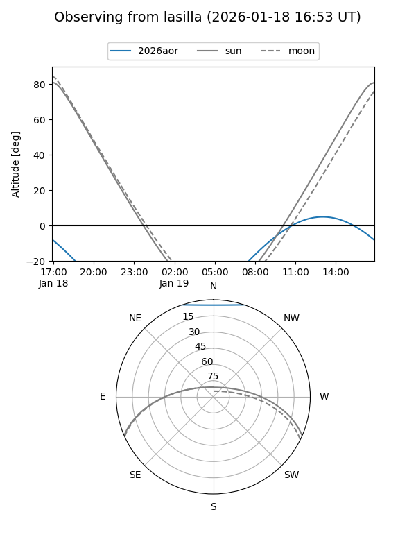
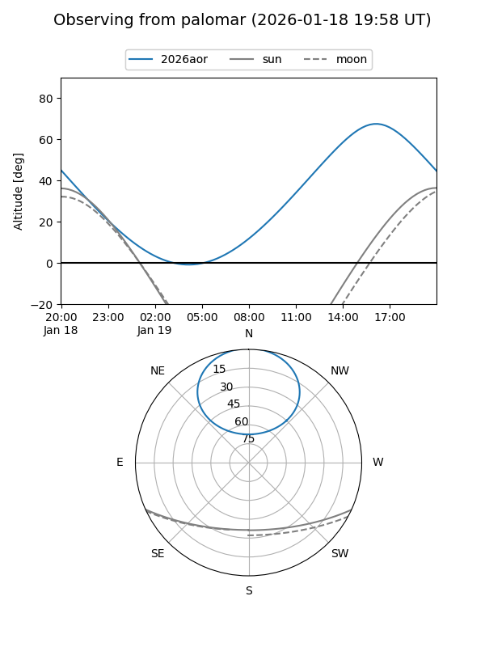
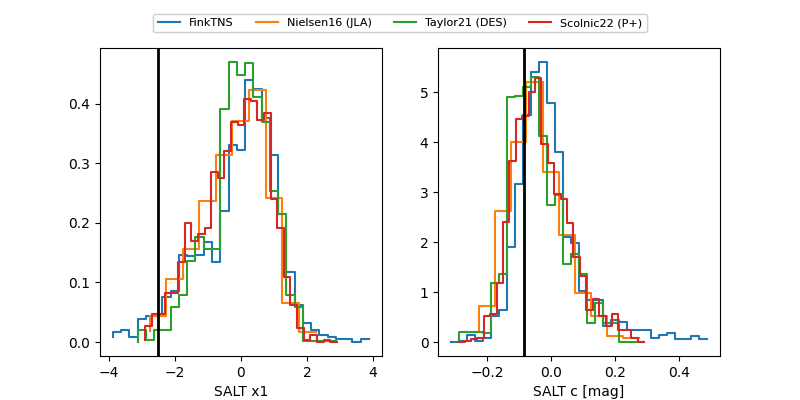

2026aor
Target 2026aor at 2026-01-21 22:06
Aliases and brokers:
FINK: link
Lasair: link
ALeRCE: link
TNS: link
YSE: link
alt names
ZTF26aacfbcp (ztf,fink_ztf)
2026aor (tns,yse)
ATLAS26axa (atlas)
Coordinates:
equatorial (ra, dec) = 243.7334,+55.87142
equatorial (HMS+DMS) = 16:14:56.03,+55:52:17.13
galactic (l, b) = (85.8217,+43.83196)
Flags:
confirmed ia
Photometry:
last atlaso=19.34, ztfg=18.75, ztfr=18.83
1 atlaso, 2 ztfg, 2 ztfr detections
Lightcurve

Visibility


Additional plots
